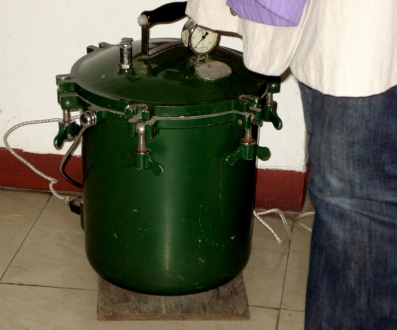

(continuation)
| GO TO PAGE 5 OF 9 | BACK TO DATE PAGE | ||||||||||||
| Fish At The Doctor (continuation) |
|||||||||||||
|  | |||||||||||||
| This is the pressure vessel for sterilizing the needles. It was interesting to watch the doctor select ultra-fine needles of varying lengths, feel a spot on Fish's arm with his index finger, sink the needle, and I mean SINK it, and then twirl it before finally letting go. Fish didn't flinch, and he claims you can't feel the insertion. | |||||||||||||
| GO TO PAGE 5 OF 9 | BACK TO DATE PAGE | ||||||||||||